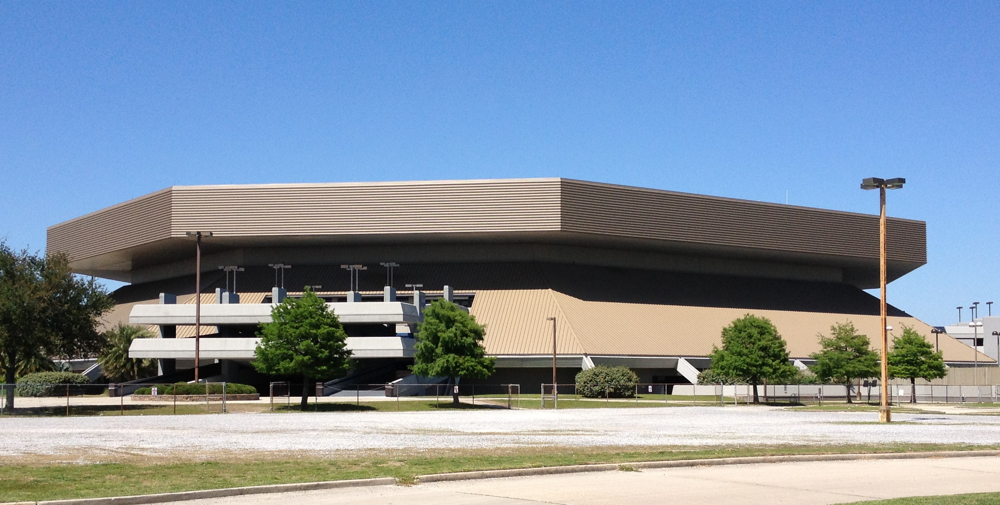

Service Search
Popular Searches
- Generic Information
For Building Locations & Hours, Log-in Tutorials, Department Overviews and much more!
- University History
Take a deep dive into our universities storied past (for example Alumni & Sports Achievements) or just for what happened last Tuesday (for ex. Annual Ceremonies).
- Requests & Incident Reports
For Transcripts and other general Forms as well as a record of documented incidents on campus.
- Phone Book
A list of the most frequently used university lines and emails. Along with tips for who to contact depending on the problem.
Commonly Asked Questions and Solutions
- Login Assistance
Take a dive moodle login, webstar login, myapps login etc.
- Network Troubleshooting
Connection troubleshooting and much more here